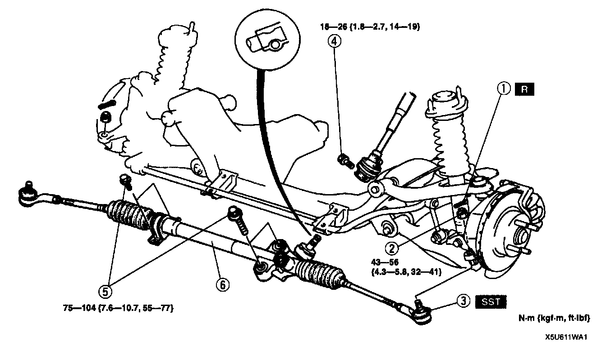
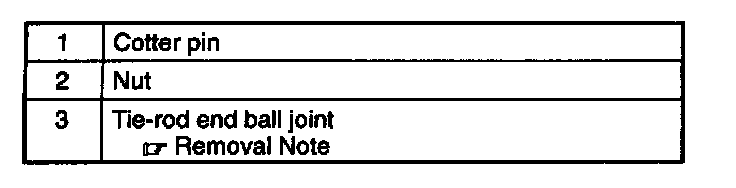
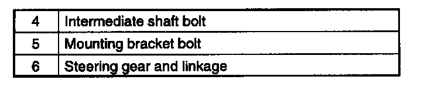
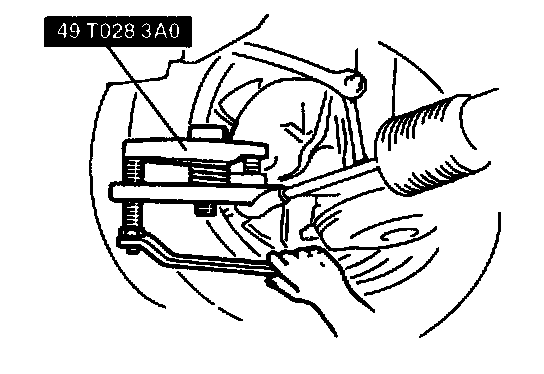

Removal and Installation
STEERING GEAR AND LINKAGE REMOVAL/INSTALLATIONCaution:
- Performing the following procedures without first removing the ABS wheel-speed sensor may possibly cause an open circuit in the harness if it is pulled by mistake. Before performing the following procedures, remove the ABS wheel-speed sensor (axle side) and fix it to an appropriate place where the sensor will not be pulled by mistake while servicing the vehicle.



1. With the wheels in the straight-ahead position, remove in the order indicated in the table.
2. Install in the reverse order of removal.
3. Adjust the total toe-in.
Tie-Rod End Ball Joint Removal Note

- Separate the tie-rod end ball joint from the knuckle by using the SST.